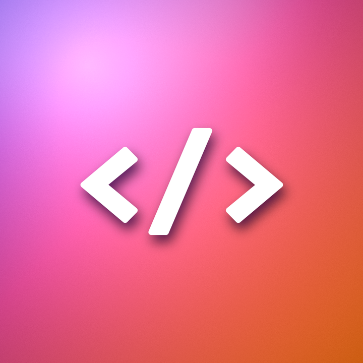

Четыре проекта. У каждого есть работающая версия или открытый код.
01iOS 17+ · PWA
«Не курю» / I Quit
Приложение для отказа от никотина. Считает дни без сигарет, показывает восстановление организма по 16 вехам и сколько денег уже сэкономлено. Есть 17 достижений, виджеты, напоминания и два языка. Данные хранятся на телефоне, аккаунта нет.
Клиент выбирает услугу, день и время, оставляет имя и телефон. Мастер получает уведомление в Telegram, клиенту уходят напоминания за сутки и за два часа. В админке видны записи, загрузка, услуги, барберы и выходные.
Салон и имена в демо вымышленные. Токен и база не в репозитории.
03Telegram · Python
Бот-визитка
Меню с разделами, форма заявки и отзывы. Посетитель ставит оценку и пишет пару слов, отзыв появляется после подтверждения владельцем. Заявка приходит в Telegram. Тексты и контакты меняются в одном файле.
Шаблон. В репозитории нет токена и настоящих контактов.

04Браузер · без установки
Jelly Stack
Аркада про башню из желе. Носик ездит над основанием, тап или пробел роняет желешку. Лишнее отрывается и падает, башня кренится и может рухнуть. Чем выше, тем быстрее двигается носик. Рекорд хранится в браузере.
Сначала собираю рабочую версию, потом добавляю детали. В «Не курю» сначала был HTML-прототип: на нём проверил экраны, расчёты и первые шаги. Потом перенёс всё в SwiftUI. В боте записи сначала появились слоты и база, потом админка и напоминания.
Не люблю демо, где кнопки ничего не делают. Если проект в списке, его можно открыть и проверить: у приложения есть PWA-версия, у ботов исходники и инструкция запуска, в игру можно сыграть прямо здесь.
Связаться
Нужен сайт, бот или приложение?
Напишите в Telegram. Отвечаю в тот же день, если не сплю.